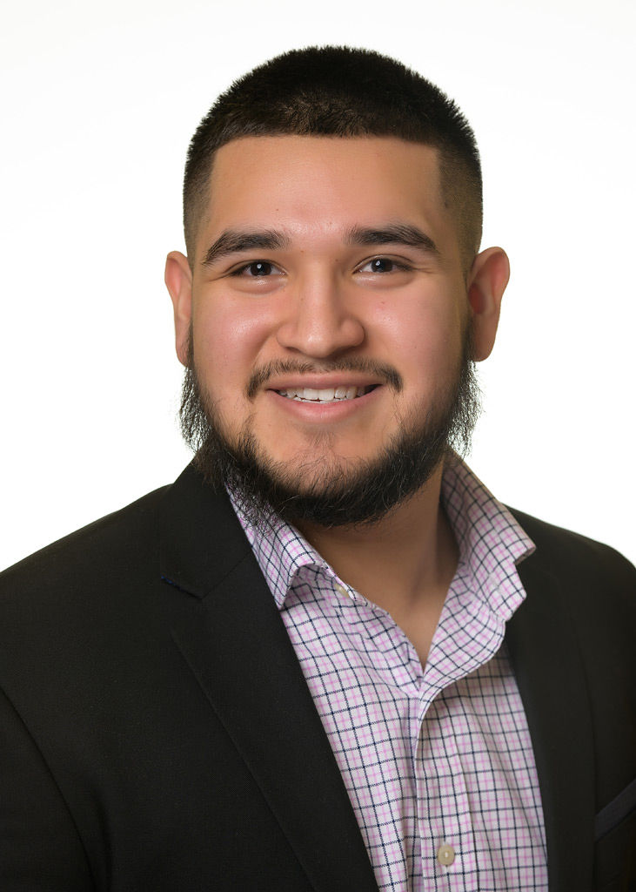

<!-- This is a website showcasing me, Brian Franco-->
<!DOCTYPE HTML>
<html lang="en"></html>
  <head>
    <meta charset="UTF-8" />
    <meta name="viewport" content="width=device-width, initial-scale=1.0" />
    <title>Brian Franco</title>
    <style>
        h1{
            font-size: 50px;
            text-emphasis: bold;
            color: black;
        }
        h2{ 
            color: red;
            text-decoration: underline;
            text-decoration-color: red;
        }
        body{
            background-color: beige;
        }
        p{
            font-size: 18px;
            color: black;
        }
    </style>
  </head>
  <body> 
   <!-- Add Hyperlinks to top of page-->
   <a href="mailto:alessfranco02@gmail.com">Email me</a>
   <a href="image/workpicture.jpg">Picture of Me</a>
   <!-- Picture of me -->
   
    
   <h1> Brian Franco</h1>
   <h2> About me </h2>
    <p> Hello, my name is Brian Franco. I live in Lexington, Kentucky. I am 20 years old. I am a computer science (CS) student at Transylvania University (Transy). 
        I am a junior and my birthday is on September 28. 
        I have learned to code and do many fun projects in Python, C++, MIPS, Prolog and I used microPython to program Lego Mindstorm robots in my robotics course.
        This website was coded using CSS and HTML to show code mastery as well as give a little more info about me &#128512;. 
    </p>

    <h2>Achievements</h2>
    <p>
    I have been a man of many achievements due to my hard work. 
    </p>
    <h3>Academic</h3>
    <p> I have been part of the Dean's List every semester in college. I have a 3.89 GPA. I was the Sergeant of Arms during my time in Pi 
        Kappa Alpha. I oversaw the chapter and made sure all members of the fraternity were upholding both 
        the standards of the chapter and of the University. Any violations to behavioral policies were appropriately dealt with 
        by me.  I also was the Vice President of Recruitment for the Inter-Fraternity Council. My duties were to set recruitment dates,
        vote on important fraternity polciies, and to make sure no hazing occured during recruitment. I also am the current treasurer
        of French Club at Transy. My responsibilities here are to manage the finances of the club. </p>

    <p> 
        I have been recognized as a great worker in several jobs. This has been shown by my promotion as a supervisor 
        from my former General Manager at Jason's Deli. I also have been provided with certificates of appreciation from my internships at
        All-Star Purchasing and the Lexington Human Rights Commission. Currently I am a site supervisor at a family company, Franco's Painting 
        LLC. I help communicate with customers, ensure all jobs are of excellent quality, and help keep labor costs down. 
    </p>
    <h2>Programming experience</h2>
    <p> I have done several projects using multiple languages to get these done. Some of the languages I've programmed in are HTML, CSS, C++, Python, Ruby, and Verilog.</p>
    <h3>Python</h3> 
    <p> I have written programs using micropython to help a Lego MindStorm EV3 robot travel across Transylvania University's Cowgill Building. It was programmed to travel across
     the second floor using dead reckoning to keep track of its location and know when to turn. </p> 
      
    <h3>Professional</h3>
    <h2> Skills </h2>
    <p> 
        I am a great translator and have been doing it at home and at the work place. 
        I am also a great leader. I have been a leader academically in various school organizations, in 
        multiple work places, and in athletic teams. I am great with customers as I have worked in customer
        service for many years. I'm not afraid to speak up and have done so in work issues, team discussions,
        and management discussions. For computer science I have completed coding projects using Python, C++, MIPS, HTML, and CSS. 
        I pick up on ideas quickly and this has led me to success everywhere I have gone. 
    </p>

    <h2>Languages I Speak</h2>
    <p> 
        I speak fluent Spanish. It was my first language.
        I ended up having to attend English classes when I began school at 4 years old in Lexington, Kentucky. Now I am fluent in both Spanish and English.
        I use English everywhere outside of my home, but my everyday language at home is Spanish. I speak this with my family and other Hispanic individuals. 
        I also took French in school. I began freshman year of high school and stopped my sophomore year of college. I took an AAPL exam my senior year of 
        high school, and was certified literate in French.
    </p>

    <h2> What I bring to the table</h2>
    <p> 
        As a college student I do not yet, have the required experience to be a master software developer, but I do have the will and ability to become this. 
        I have done well in all my CS classes. I have been able to learn and master all concepts brought to me in school. 
        I have gotten an A in all my  CS classes as well. I  am great at time management, this has come to me by balancing work, school, athletics, and my personal life. 
        I am also an excellent leader as can be seen throughout my life. I am someone who is very goal oriented and precise. I make sure I am providing only the best 
        effort when I submit something. This is true whether I am submitting a coding project, a paper, or even a customer meal. 
        I always send my best work, this is something any company needs. I have no doubt that I will be a great software developer with the help of great mentors. 
    </p>

    <h2> More Personal Things About Me</h2>

    <h3>My hobbies</h3>
    <p>
        I like to spend time at home playing video games such as GTA V, FIFA, NBA 2K, or God of War. 
        If I am not playing videogames I like to go to the gym and lift weights. Cardio is not very fun &#9785;.
        I played soccer since I was 10 years old, and just recently stopped in September 2021 to focus on working. 
        I also like to go to restauraunts and try new foods. I don't have a favorite food but I like to eat. 
        My favorite restauraunts in Lexington are Chuys, Roosters, and Chick Fil A. I will eat pretty much anything.
        I also love to code and drive my car around town. 
    </p>
    <h3>Sports</h3>
    <p> 
        My favorite sport growing up was soccer. I played for a club team in Lexington, and I played for my
        high school. I preferred playing in the midfield as a defensive mid or attacking mid, but I played 
        center back most of the time. I didn't like to play defense, but I was usually played there. I went on to play striker 
        a couple of times for the junior varsity team. My favorite soccer player is Cristiano Ronaldo and my favorite 
        team is Monterrey (A Mexican team). My second favorite sport to watch is basketball. I am an Oklahoma City Thunder
        fan, and my favorite player is Russell Westbrook. 
    </p>
    <h3>Athletic Achievements</h3>
    <p>
        I was a team captain of my club team and I was recognized as the most valuable defender in 2017 for Lafayette. 
    </p>
<a href="#">Jump to top</a>
</body>
</html>
